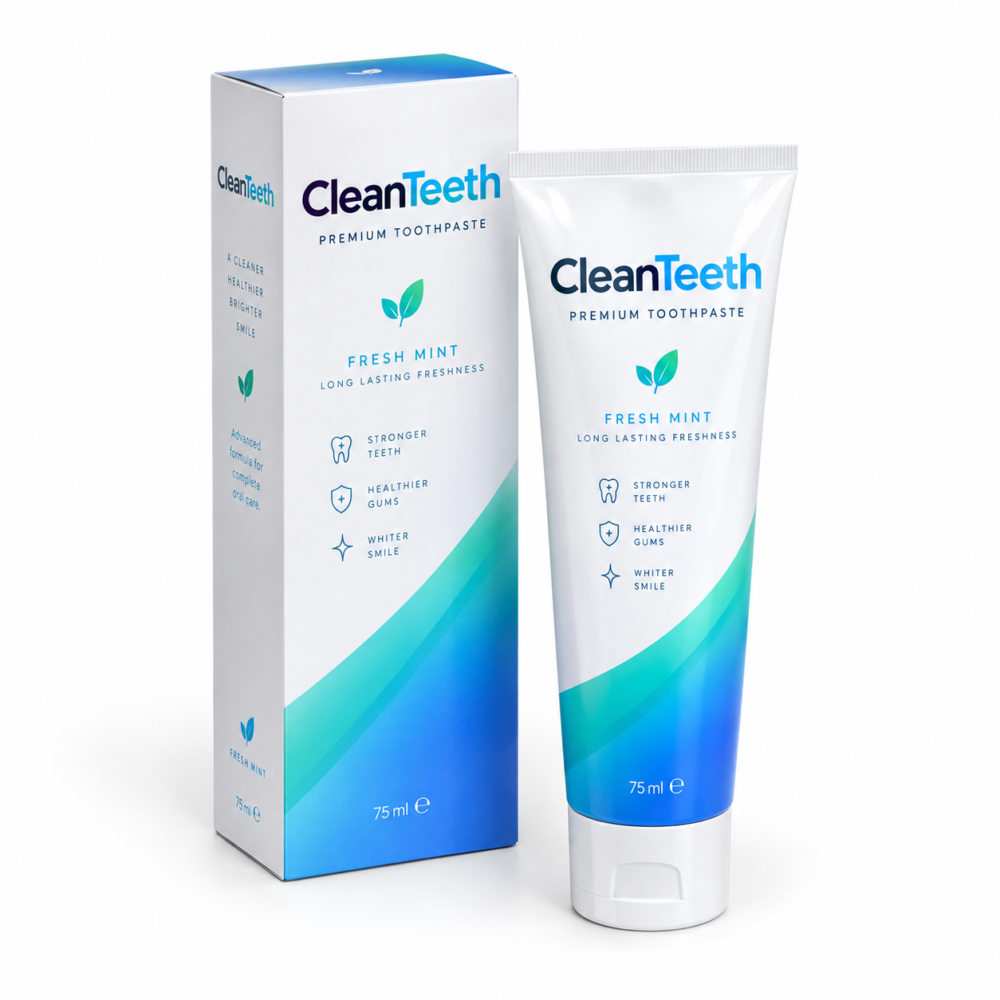

Clean Teeth es una marca de pasta de dientes de lujo pensada para quienes cuidan su sonrisa cada día. Su fórmula avanzada busca unos dientes más fuertes, unas encías más sanas y una sonrisa más blanca.
Me encantan los productos de cuidado personal, y por eso he creado esta web. Tener los dientes siempre limpios es una forma sencilla de sentirse bien y de empezar el día con frescura.
